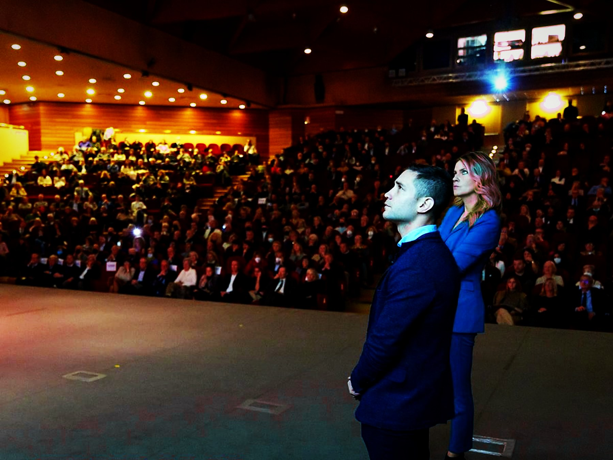

I team aziendali parlano spesso di performance, ma non sempre hanno occasioni concrete per vederla, comprenderla e allenarla. La presenza di grandi campioni sportivi crea un ponte potente: rende tangibili principi che altrimenti restano concetti astratti.

La forza della testimonianza vissuta
Un campione conosce il peso degli obiettivi, la fatica della preparazione, la gestione dell'errore e la pressione del risultato. Quando racconta questi passaggi a un team aziendale, non sta facendo motivazione generica: sta mostrando cosa significa costruire performance nel tempo.
Il ruolo del formatore e degli specialisti
La testimonianza da sola ispira. Il metodo la trasforma in apprendimento. Per questo BeOx affianca ai campioni formatori, mental coach, esperti di risorse umane, psicologi e specialisti del benessere: l'esperienza sportiva viene decodificata e collegata alle dinamiche reali del team.
Dallo speech al percorso
Un intervento con un campione può aprire una convention, dare forza a un kick-off o diventare parte di una Sport Academy aziendale. La differenza la fa il disegno complessivo: obiettivo, messaggio, esperienza pratica, debriefing e trasferimento operativo.

- Pressione: mantenere lucidità quando il contesto accelera.
- Errore: trasformare una caduta in informazione utile.
- Disciplina: collegare allenamento, costanza e risultato.
- Team: passare dal talento individuale alla performance collettiva.
Il punto BeOx
I grandi campioni danno credibilità al messaggio. Il metodo BeOx lo porta nel lavoro quotidiano, trasformando ispirazione in cambiamento concreto.